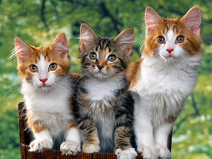

Cats are often valued by humans for companionship and their ability to hunt vermin and household pests.
Cats are similar in anatomy to the other felids, with strong, flexible bodies, quick reflexes, sharp retractable claws, and teeth adapted to killing small prey. Cat senses fit a crepuscular and predatory ecological niche. Cats can hear sounds too faint or too high in frequency for human ears, such as those made by mice and other small animals. They can see in near darkness. Like most other mammals, cats have poorer color vision and a better sense of smell than humans.